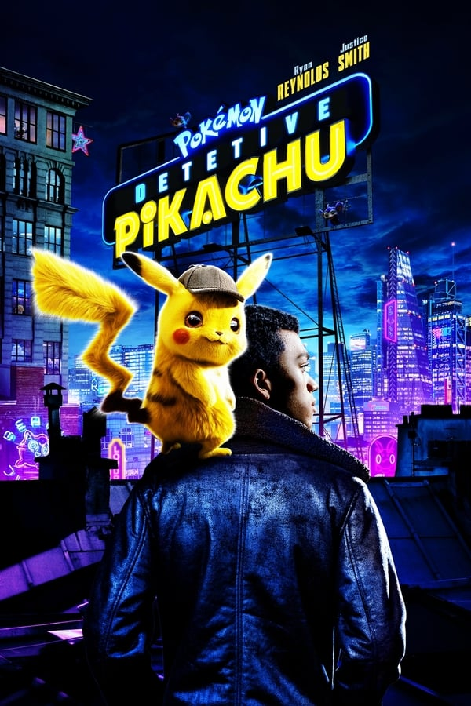

Com o retorno do Imperador Palpatine, todos voltam a temer seu poder e, com isso, a Resistência toma a frente da batalha que ditará os rumos da galáxia. Treinando para ser uma completa Jedi, Rey (Daisy Ridley) ainda se encontra em conflito com seu passado e futuro, mas teme pelas respostas que pode conseguir a partir de sua complexa ligação com Kylo Ren (Adam Driver), que também se encontra em conflito pela Força.

O desaparecimento do detetive Harry Goodman faz com que seu filho Tim parta à sua procura. Ao seu lado ele conta com Pikachu, o antigo parceiro Pokémon de seu pai, que perdeu a memória recentemente. Juntos, eles percorrem as ruas da metrópole de Ryme City, onde humanos e Pokémon vivem em harmonia... por enquanto.

O ataque de Ultron fez com que os políticos buscassem algum meio de controlar os super-heróis, já que seus atos afetam toda a humanidade. Tal decisão coloca o Capitão América em rota de colisão com Tony Stark, o Homem de Ferro.

Em 1984, Diana Prince entra em conflito com dois inimigos formidáveis, Maxwell Lord e a Mulher-Leopardo, enquanto reencontra misteriosamente com seu antigo interesse amoroso Steve Trevor.

Um médico dissidente e anti-social, que se especializou em medicina de diagnóstico. Faz o que for preciso para resolver casos intrigantes que estão no seu caminho, usando a sua equipe de médicos e sua inteligência.

Homem de Ferro, Thor, Hulk e os Vingadores se unem para combater seu inimigo mais poderoso, o maligno Thanos. Em uma missão para coletar todas as seis pedras infinitas, Thanos planeja usá-las para infligir sua vontade maléfica sobre a realidade.